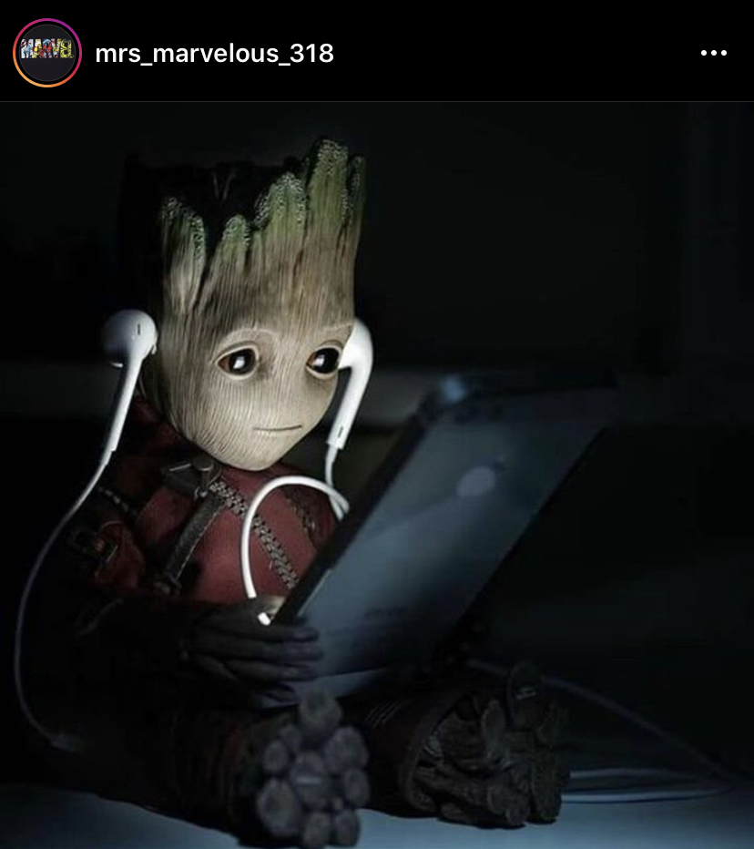
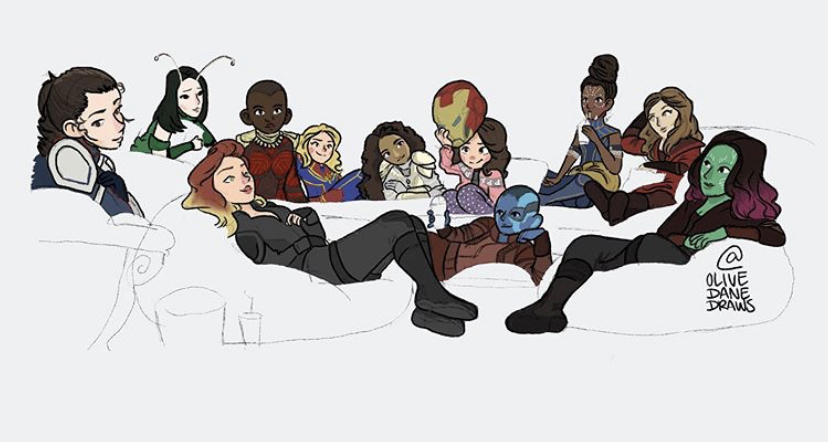

Black Widow Movie Poster, May 2020
![In this illustration one is able to see a smiling Stan Lee. Stan Lee was an American comic book writer for Marvels. He is holding two figures, Iron Man and Thanos. Iron Man is a fictional superhero who wears a mechanized red suit of armor and Thanos is a purple figure, one of the most powerful fictional supervillain in Marvels. The illustration uses vibrant and bright colors. The background is purple and Stan Lee is wearing a bright green shirt. The figure is shown from the chest up. He is playing with the two other characters that resemble a toy.](images/StanLee.jpeg)
Stan Lee holding Iron Man and Thanos
![This illustration shows T'Challa as one half black Panther and the other half as the King of Wakanda. T'Challa is an African fictional character in the Marvel Universe. He is the king of Wakanda and also the superhero, Black Panther. The illustration shows both of his identities making a combined figure. The illustration is split in half. On the left, we see Black Panther in his vibranium, a fictional metal black and purple suit. The background of that half is a blue interpretation of leaves. The right half, shows us the African king T'Challa, wearing his purple jacket. In the Background we see a bright city landscape. This landscape is Wakanda](images/BlackPanther.jpeg)
Black Panther aka. T'Challa

Baby Groot From Guardians of the Galaxy Vo.2

MCU Women: The Wasp, Mantis, Black Widow, Okoye, Captain Marvel, Valkyrie, Morgan Stark, Nebula, Shuri, Scarlet Witch and Gamora
Character Index
"Black Widow: Is a female fictional superhero, who was a Russian spy but becomes part of the Avenger original 6.
Stan Lee: Was an American comic book writer for Marvels.
Iron Man: Is a fictional superhero, who also is wealthy American business magnate, playboy, and ingenious scientist. After suffers a severe chest injury during a kidnapping, he creates a mechanized suit of armor to save his life which later helpes him become Iron Man.
Thanos: Is a fictional supervillain. He is one of the most powerful villains in the Marvel Universe and has clashed with many heroes
Black Panther also known as T'Challa: Is a fictional superhero. After the death of his father, T'Challa returns home to the African nation of Wakanda to take his rightful place as king. When a powerful enemy suddenly reappears, T'Challa's mettle as king - and as Black Panther.
Groot: Is a fictional Marvel character. He is an extraterrestrial, sentient tree-like creature
The Wasp: Is a female fictional superhero. She is usually depicted as having the ability to shrink to a height of several centimeters, fly by means of insectoid wings, and fire bioelectric energy blasts
Mantis: Is a fictional superheroine and has psychic empathy, a telepathic power that allowed her to sense the emotions of others.
Okoye: Is a fictional female character who fight beside her king, T'Challa and her city Wakanda.
Captain Marvel: Is an extraterrestrial Kree warrior and fictional superhero.
Valkyrie: Is a fictional superheroine. The character, based on the Norse mythological figure Brynhildr.
Nebula: Is a female fictional character.
Shuri: Is a female fictional superhero. Shuri is a princess of the fictional African kingdom of Wakanda. She is the daughter of T'Chaka and sister of T'Challa, who is the king of Wakanda and the Black Panther, an earned title and rank given to the chief of the nation.
Scarlet Witch: Is a fictional superheroine. She is portrayed as a mutant, a member of a fictional subspecies of humans born with superhuman abilities. Scarlet Witch possesses abilities to alter reality in unspecified ways and is a powerful sorceress.
Gamora: Is a fictional character. She is the adopted daughter of Thanos, and the last of her species. Her powers include superhuman strength and agility and an accelerated healing factor. But fight along the The Guardians of the Galaxy.
Morgan Stark: Is a fictional character. She is the daughter of Iron Man.